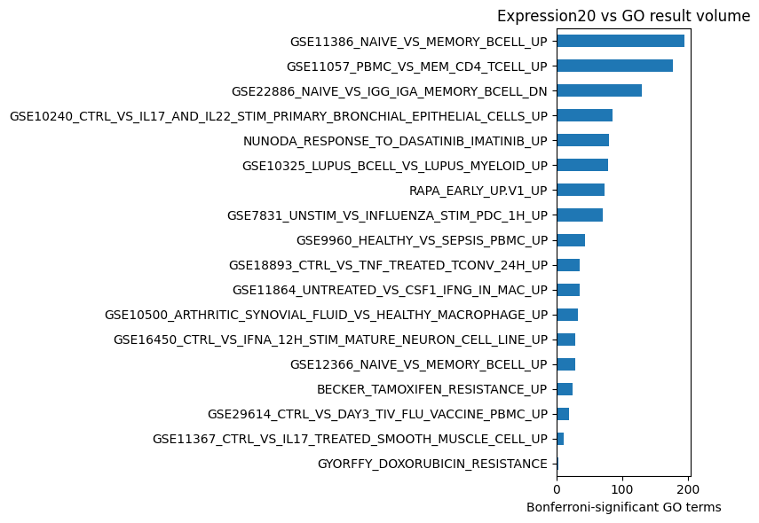

Introduction
genesets-rs is a fast, CLI-first enrichment engine for ontology-aware and flat gene set analysis.
The project is deliberately ontology-neutral. Gene Ontology is the main near-term use case, but the core data model only requires:
- a table of term CURIEs and human-readable names,
- a precomputed child-to-ancestor closure table,
- gene-to-term annotations,
- optional gene names or symbols,
- query sets and background sets.
Flat libraries, such as MSigDB-style collections, are represented as terms with no closure. User samples are also just flat terms. This keeps the statistical engine the same for sample-vs-ontology, sample-vs-library, and arbitrary term-vs-term matrix jobs.
What This Is Optimized For
The initial design is aimed at repeated over-representation analysis:
- compare thousands of disease, pathway, or experiment-derived gene sets against one ontology;
- compare two ontology releases by running the same query set against both;
- run ontology terms against themselves to inspect term overlap structure;
- cache or reuse prepared annotation tables from external ontology tooling.
The MVP statistic is one-sided Fisher exact enrichment with optional Bonferroni correction. The implementation leaves room for ranked-list statistics and ontology-aware model-set methods, but the first requirement is a very fast and auditable baseline.
Project Layers
The project has two user-facing layers:
genesets-rs: the Rust CLI and library code for loading normalized tables, building bitset indexes, computing enrichment, comparing result tables, and writing TSV or Parquet.genesets-workflows: the Python workflow package for repeatable source preparation, configured reports, metadata, DuckDB summaries, notebooks, and future web-facing reports.
The boundary is intentional. GO, GOA, Reactome, MyGeneSet, evidence-code filters, release metadata, and report layouts change faster than the enrichment kernel. They belong in the workflow layer. The Rust core should continue to accept normalized ontology-neutral tables and do one job quickly.
Non-Goals For The Core Engine
The core engine does not know about species, evidence codes, ontology release policy, identifier mapping, or remote services. Those concerns belong in prep and wrapper layers. This separation keeps the fast path small and makes it easier to build reproducible evals.
Getting Started
Build the CLI:
cargo build --release
Install this checkout so genesets-rs can be run from any directory:
cargo install --path /path/to/genesets-rs --force
Cargo writes the binary to ~/.cargo/bin/genesets-rs. If your shell cannot
find it, add Cargo’s bin directory to your PATH:
echo 'export PATH="$HOME/.cargo/bin:$PATH"' >> ~/.zshrc
source ~/.zshrc
Run the bundled ontology-style example:
genesets-rs enrich \
--annotations examples/gene_terms.tsv \
--terms examples/terms.tsv \
--closure examples/closure.tsv \
--sample examples/sample.txt \
--background examples/background.txt \
--overlap-genes
Run all ontology terms against all ontology terms:
genesets-rs matrix \
--annotations examples/gene_terms.tsv \
--terms examples/terms.tsv \
--closure examples/closure.tsv \
--queries-from-targets \
--background examples/background.txt
Run from YAML:
genesets-rs run examples/enrich.yaml
Relative paths inside a YAML config are resolved from the config file’s directory, so this also works from outside the repository:
genesets-rs run /path/to/genesets-rs/examples/enrich.yaml
For development without installing, use cargo run -- before the same CLI
arguments:
cargo run -- run examples/enrich.yaml
Install or run the optional workflow layer when you want repeatable source prep, GO/Reactome evals, Parquet summaries, and report metadata:
uv run --project python/genesets-workflows genesets-workflows doctor
The workflow layer calls the Rust CLI for batch compute; it is not required for simple one-off enrichment.
Build the documentation site locally:
cargo install mdbook
mdbook serve
Run the test suite:
cargo test
Run the benchmark harness:
cargo bench
Input Model
The engine has one central abstraction: a named set of genes. Ontology terms, flat database entries, user samples, and backgrounds can all be represented this way.
Ontology Targets
Ontology enrichment targets are built from three tables:
Terms:
term_id name
GO:0006915 apoptosis
Closure:
child ancestor
GO:0006915 GO:0006915
GO:0006915 GO:0012501
Annotations:
gene_id term_id
TP53 GO:0006915
The closure table is expected to be reflexive, but the loader defensively adds each term as its own ancestor. If a gene is annotated to a child, the prepared bitset for every ancestor receives that gene.
Flat Targets
Flat targets skip closure. They can be read from:
list: one gene per line, one set total;pairwise:set_id,gene_id;gene-term:gene_id,set_id;gmt:set_id,description, genes;gmx: first row set IDs, remaining rows genes;gmx-desc: first row set IDs, second row descriptions, remaining rows genes.
Background
If no background file is supplied, the background is the union of all target genes. A supplied background file overrides that behavior and is read as one gene per row.
This matters for experimental data. For RNA-seq differential-expression lists, the background should usually be all genes that were measured and eligible to become significant, not every protein-coding gene.
Gene Names
Gene names are optional. The statistical engine uses gene IDs only. A gene-name table is only used for human-readable overlap output.
CLI Reference
The CLI has four subcommands:
enrich: one query set against many target sets;matrix: many query sets against many target sets;run: YAML-configuredenrichormatrix.compare: threshold-crossing diff between two result tables.
enrich
genesets-rs enrich \
--annotations gene_terms.tsv \
--terms terms.tsv \
--closure closure.tsv \
--sample sample.txt \
--background background.txt \
--output results.tsv
Use --target-sets instead of --annotations for flat libraries:
genesets-rs enrich \
--target-sets library.gmt \
--target-format gmt \
--sample sample.txt
Useful options:
--sample-format:auto,list,pairwise,gene-term,gmt,gmx,gmx-desc;--sample-set: select one set from a multi-set sample file;--min-overlap: suppress rows below an overlap count;--max-p-value: suppress rows above a raw p-value cutoff;--max-p-adjust: suppress rows above an adjusted p-value cutoff;--correction:bonferroniornone;--output-format:tsv,parquet, ornull;parquetrequires--output, andnullis useful for compute-only profiling;--overlap-genes: include overlapping gene IDs and names;--threads: set Rayon worker count.
matrix
genesets-rs matrix \
--annotations gene_terms.tsv \
--terms terms.tsv \
--closure closure.tsv \
--queries queries.gmx \
--query-format gmx \
--background background.txt
Use targets as queries for term-vs-term runs:
genesets-rs matrix \
--annotations gene_terms.tsv \
--closure closure.tsv \
--queries-from-targets
run
mode: enrich
ontology:
terms: terms.tsv
closure: closure.tsv
annotations: gene_terms.tsv
input:
sample: sample.txt
sample_format: list
sample_name: sample
background:
file: background.txt
overlap_genes: true
max_p_adjust: 0.05
output_format: tsv
Run it:
genesets-rs run examples/enrich.yaml
Relative paths in YAML are resolved from the config file’s directory. Relative paths passed directly as CLI arguments are resolved from the current working directory.
For mass evals, write Parquet and inspect it with DuckDB:
genesets-rs matrix ... --output-format parquet --output results.parquet
duckdb -c "SELECT * FROM 'results.parquet' WHERE p_adjust_bonferroni <= 0.05"
compare
Compare two enrichment result tables by (query_id, target_id) and classify
adjusted p-value threshold crossings:
genesets-rs compare \
--left go-2021.parquet \
--right go-2026.parquet \
--p-adjust-cutoff 0.05 \
--output-format parquet \
--output go-2021-vs-2026.diff.parquet \
--metadata-output go-2021-vs-2026.diff.yaml
Input formats are inferred from .tsv, .txt, .parquet, or .pq, or can be
set explicitly with --left-format and --right-format. TSV output goes to
stdout by default. Parquet output requires --output.
The default output includes:
lost_significant: significant on the left, not significant on the right;gained_significant: not significant on the left, significant on the right;shared_significant: significant on both sides.
Use --crossings-only to emit only gained/lost rows.
Workflow CLI
The separate genesets-workflows command is the convenience layer for
configured source prep and reports. It calls the Rust CLI for batch compute and
then writes Parquet plus metadata:
uv run --project python/genesets-workflows genesets-workflows doctor
genesets-workflows go-impact evals/go_impact_5y_expression500.yaml
genesets-workflows reactome-flat
Use genesets-rs for normalized single jobs. Use genesets-workflows when the
task needs downloads, evidence filters, release metadata, multiple Rust runs,
DuckDB summaries, or notebook/report artifacts.
Workflow Layer
genesets-rs is the compute kernel. It should stay small, ontology-neutral,
and fast. The outer convenience layer lives in the Python package under
python/genesets-workflows.
The workflow layer owns the parts that are useful but not core enrichment logic:
- fetching public sources such as GO, GOA, Reactome, and MyGeneSet;
- preparing normalized tables, closures, evidence-code variants, and backgrounds;
- running batch analyses through the Rust CLI;
- writing Parquet result artifacts and YAML metadata;
- querying result Parquet with DuckDB;
- generating report summaries for docs, notebooks, and future web views.
Local Use
Run the packaged workflow CLI from this checkout:
uv run --project python/genesets-workflows genesets-workflows doctor
For repeated local use, install it editable:
python3 -m pip install -e python/genesets-workflows
genesets-workflows doctor
The Rust binary still needs to be installed or on PATH:
cargo install --path . --force
From outside the repository, use an absolute project path or install the workflow package into the active environment:
uv run --project /path/to/genesets-rs/python/genesets-workflows \
genesets-workflows doctor
python3 -m pip install -e /path/to/genesets-rs/python/genesets-workflows
When To Use Which Layer
Use genesets-rs directly when inputs are already normalized and the task is a
single enrichment, matrix enrichment, or result comparison:
genesets-rs matrix \
--target-sets reactome.gmt \
--target-format gmt \
--queries expression_sets.gmt \
--query-format gmt \
--output-format parquet \
--output results.parquet
Use genesets-workflows when the task has source-specific prep, multiple Rust
runs, metadata, or report summaries:
genesets-workflows go-impact evals/go_impact_5y_expression500.yaml
The workflow command should usually call Rust once per large batch, not once per gene set. If a workflow needs thousands of enrichments, it should express that as a batch plan for the Rust CLI.
Current Commands
GO impact report over two prepared GO snapshots:
genesets-workflows go-impact evals/go_impact_5y_expression500.yaml
Expression signatures against official Reactome as a flat pathway library:
genesets-workflows reactome-flat
Prepare the official Reactome GMT target library:
genesets-workflows prepare-reactome-flat \
--out-dir evals/reactome_flat/generated/current
Fetch a MyGeneSet query snapshot:
genesets-workflows fetch-mygeneset \
--query 'GSE*' \
--source-filter msigdb \
--limit 500 \
--out-dir evals/expression_like/generated/msigdb_gse_500
The old script entry points for these packaged commands remain as compatibility wrappers around the package modules. Some older eval helpers are still script-native and should be migrated as the workflow layer expands.
Interface Boundary
Python should call Rust through batch-oriented commands, not tight subprocess loops. The desired pattern is:
Python source prep -> normalized tables/YAML plan -> one Rust batch command
-> Parquet outputs -> DuckDB summaries/reports
This keeps the subprocess boundary coarse. If a future notebook, web service,
or Python API needs in-process enrichment, a maturin binding can wrap the
same Rust core crate without replacing the CLI.
The current choice is CLI-first rather than maturin-first because the most
variable code is not the Fisher test. It is fetching, filtering, release
metadata, identifier normalization, report generation, and SQL over Parquet.
Those pieces are faster to evolve in Python. The Rust interface should grow
batch abstractions before Python grows tight bindings.
Artifact Layout
Workflow outputs should be predictable so notebooks, docs, CI jobs, and a future web viewer can consume the same products:
run-dir/
summary.yaml
summary.json
queries.gmt
queries.metadata.json
left-results.parquet
right-results.parquet
left-vs-right.diff.parquet
left-vs-right.diff.yaml
Use Parquet for durable result tables. Use small YAML/JSON files for metadata, parameters, source URLs, file hashes, version labels, row counts, and timing. Use TSV only for small human-inspectable runs.
DuckDB is the default introspection layer over Parquet:
duckdb -c "SELECT class, count(*) FROM 'left-vs-right.diff.parquet' GROUP BY class"
That keeps artifacts immutable and easy to share while preserving SQL inspection.
Distribution Plan
The repository should remain a monorepo:
- Rust crate and CLI: crates.io release surface.
genesets-workflows: PyPI release surface.- Docs, eval configs, and notebooks: same git history and version tags.
The Python package should record the expected genesets-rs CLI version and
check it at runtime as the workflow layer matures. Release tags can drive both
crates.io and PyPI publishing.
Short-term distribution:
cargo install --path .
uv run --project python/genesets-workflows genesets-workflows doctor
Longer-term distribution:
cargo install genesets-rs
python3 -m pip install genesets-workflows
If in-process Python calls become necessary, add maturin bindings around the
same Rust core crate. The CLI should remain supported because it is the most
transparent interface for batch runs, notebooks, workflow engines, and remote
execution.
Notebooks And Web Reports
Notebooks should demonstrate the CLI and analyze generated artifacts. They should not be the primary workflow engine. A notebook should run a configured workflow command, then display Parquet-derived tables and plots.
A future web interface can follow the same model: select a run directory, read
summary.yaml, query Parquet with DuckDB or an Arrow stack, and render
threshold crossings, timing, and top changed terms. No web-specific behavior
needs to enter the Rust enrichment kernel.
Tutorials
These tutorials are CLI-first workflows. Each one has a matching Jupyter
notebook under the repository’s notebooks/ directory, but the commands shown
here can also be run directly in a shell.
Notebook Setup
Install the CLI from the checkout:
cargo install --path /path/to/genesets-rs --force
Install the workflow/notebook environment from the Python package:
uv run --project python/genesets-workflows --extra notebooks genesets-workflows doctor
Generated notebook outputs should be written under notebooks/generated/,
which is ignored by git.
Available Tutorials
- CLI Quickstart: run the bundled example and inspect the enrichment TSV.
- Expression20 vs GO: enrich the small expression-derived panel against official GOA human/GO targets.
- GO Impact Report: compare 2021 vs 2026 GO/GOA over 500 expression-derived gene sets using a parameterized report config, then inspect threshold crossings and timings.
CLI Quickstart
Source notebook: ../../notebooks/01_cli_quickstart.ipynb
Start with the common bioinformatics case: a one-column list of human genes from an over-expression result, and return a table of enriched GO terms. This example uses 50 interferon/inflammatory genes and a prepared official GOA human/GO snapshot.
Output:
Output:
| gene_id |
|---|
| IFIT1 |
| IFIT2 |
| IFIT3 |
| ISG15 |
| MX1 |
| OAS1 |
| STAT1 |
| IRF7 |
| CXCL10 |
| RSAD2 |
| IFIH1 |
| IFI6 |
| IFI27 |
| IFI35 |
| IFI44 |
mkdir -p notebooks/generated
genesets-rs run examples/human-go-enrich.yaml > notebooks/generated/quickstart_go.tsv
echo "Wrote notebooks/generated/quickstart_go.tsv"
Output:
Wrote notebooks/generated/quickstart_go.tsv
Output:
Output:
| target_id | target_name | overlap | query_size | target_size | p_adjust_bonferroni |
|---|---|---|---|---|---|
| GO:0009615 | response to virus | 32 | 50 | 368 | 1.499e-48 |
| GO:0051607 | defense response to virus | 29 | 50 | 226 | 3.048e-48 |
| GO:0051707 | response to other organism | 39 | 50 | 1237 | 1.338e-44 |
| GO:0043207 | response to external biotic stimulus | 39 | 50 | 1240 | 1.471e-44 |
| GO:0009607 | response to biotic stimulus | 39 | 50 | 1278 | 4.809e-44 |
| GO:0044419 | biological process involved in interspecies interaction between organisms | 39 | 50 | 1389 | 1.257e-42 |
| GO:0006952 | defense response | 38 | 50 | 1289 | 6.566e-42 |
| GO:0009605 | response to external stimulus | 39 | 50 | 1693 | 2.858e-39 |
| GO:0140546 | defense response to symbiont | 32 | 50 | 736 | 1.101e-38 |
| GO:0098542 | defense response to other organism | 32 | 50 | 744 | 1.562e-38 |
| GO:0045087 | innate immune response | 30 | 50 | 626 | 6.192e-37 |
| GO:0006955 | immune response | 36 | 50 | 1528 | 2.063e-35 |
| GO:0002376 | immune system process | 38 | 50 | 2113 | 9.019e-34 |
| GO:0034097 | response to cytokine | 29 | 50 | 844 | 3.471e-31 |
| GO:1901652 | response to peptide | 29 | 50 | 857 | 5.410e-31 |
Broad GO terms are often expected at the very top. A useful first pass is to also inspect terms below a target-size threshold.
Output:
| target_id | target_name | overlap | query_size | target_size | p_adjust_bonferroni |
|---|---|---|---|---|---|
| GO:0009615 | response to virus | 32 | 50 | 368 | 1.499e-48 |
| GO:0051607 | defense response to virus | 29 | 50 | 226 | 3.048e-48 |
| GO:0045071 | negative regulation of viral genome replication | 15 | 50 | 49 | 1.391e-28 |
| GO:0048525 | negative regulation of viral process | 16 | 50 | 75 | 6.673e-28 |
| GO:0045069 | regulation of viral genome replication | 16 | 50 | 78 | 1.339e-27 |
| GO:0050792 | regulation of viral process | 17 | 50 | 140 | 2.027e-25 |
| GO:1903900 | regulation of viral life cycle | 16 | 50 | 112 | 7.204e-25 |
| GO:0140374 | antiviral innate immune response | 12 | 50 | 76 | 3.070e-18 |
| GO:0034341 | response to type II interferon | 12 | 50 | 101 | 1.153e-16 |
| GO:0034340 | response to type I interferon | 12 | 50 | 114 | 5.280e-16 |
| GO:0140888 | interferon-mediated signaling pathway | 11 | 50 | 88 | 3.110e-15 |
| GO:0031349 | positive regulation of defense response | 16 | 50 | 485 | 1.937e-14 |
| GO:0071346 | cellular response to type II interferon | 9 | 50 | 60 | 1.349e-12 |
| GO:0035456 | response to interferon-beta | 8 | 50 | 35 | 2.030e-12 |
| GO:0071357 | cellular response to type I interferon | 10 | 50 | 106 | 2.946e-12 |
| GO:0060337 | type I interferon-mediated signaling pathway | 9 | 50 | 67 | 3.876e-12 |
| GO:0045089 | positive regulation of innate immune response | 13 | 50 | 327 | 4.789e-12 |
| GO:0002833 | positive regulation of response to biotic stimulus | 13 | 50 | 357 | 1.490e-11 |
| GO:0032728 | positive regulation of interferon-beta production | 7 | 50 | 42 | 2.083e-09 |
| GO:0032481 | positive regulation of type I interferon production | 8 | 50 | 80 | 2.394e-09 |
Expression20 vs GO
Source notebook: ../../notebooks/02_expression20_eval.ipynb
This notebook runs 20 expression-derived MyGeneset/MSigDB signatures against an official GOA human/GO snapshot. The CLI does the enrichment; Python only summarizes the Parquet results.
python3 scripts/fetch_mygeneset_eval.py \
--manifest evals/expression20/sets.tsv \
--out-dir evals/expression20/generated \
--skip-existing
Output:
Using existing MyGeneset snapshot at evals/expression20/generated
python3 scripts/run_expression20_go_demo.py --skip-existing
Output:
reused_existing: notebooks/generated/expression20_go_now.parquet
metadata: notebooks/generated/expression20_go_now.yaml
Output:
Output:
| query_id | query_name | significant_go_terms | unique_go_terms | best_adjusted_p | max_overlap |
|---|---|---|---|---|---|
| GSE11386_NAIVE_VS_MEMORY_BCELL_UP | gse11386 naive vs memory bcell up | 194 | 194 | 2.352e-50 | 191 |
| GSE11057_PBMC_VS_MEM_CD4_TCELL_UP | gse11057 pbmc vs mem cd4 tcell up | 176 | 176 | 2.705e-34 | 201 |
| GSE22886_NAIVE_VS_IGG_IGA_MEMORY_BCELL_DN | gse22886 naive vs igg iga memory bcell dn | 129 | 129 | 3.398e-48 | 200 |
| GSE10240_CTRL_VS_IL17_AND_IL22_STIM_PRIMARY_BRONCHIAL_EPITHELIAL_CELLS_UP | gse10240 ctrl vs il17 and il22 stim primary bronchial epithelial cells up | 85 | 85 | 2.016e-35 | 193 |
| NUNODA_RESPONSE_TO_DASATINIB_IMATINIB_UP | nunoda response to dasatinib imatinib up | 80 | 80 | 1.925e-19 | 29 |
| GSE10325_LUPUS_BCELL_VS_LUPUS_MYELOID_UP | gse10325 lupus bcell vs lupus myeloid up | 78 | 78 | 3.842e-29 | 193 |
| RAPA_EARLY_UP.V1_UP | rapa early up.v1 up | 73 | 73 | 1.440e-27 | 168 |
| GSE7831_UNSTIM_VS_INFLUENZA_STIM_PDC_1H_UP | gse7831 unstim vs influenza stim pdc 1h up | 71 | 71 | 3.511e-42 | 204 |
| GSE9960_HEALTHY_VS_SEPSIS_PBMC_UP | gse9960 healthy vs sepsis pbmc up | 44 | 44 | 5.401e-36 | 190 |
| GSE18893_CTRL_VS_TNF_TREATED_TCONV_24H_UP | gse18893 ctrl vs tnf treated tconv 24h up | 36 | 36 | 4.000e-39 | 202 |
| GSE11864_UNTREATED_VS_CSF1_IFNG_IN_MAC_UP | gse11864 untreated vs csf1 ifng in mac up | 36 | 36 | 2.684e-33 | 199 |
| GSE10500_ARTHRITIC_SYNOVIAL_FLUID_VS_HEALTHY_MACROPHAGE_UP | gse10500 arthritic synovial fluid vs healthy macrophage up | 33 | 33 | 1.467e-30 | 152 |
| GSE16450_CTRL_VS_IFNA_12H_STIM_MATURE_NEURON_CELL_LINE_UP | gse16450 ctrl vs ifna 12h stim mature neuron cell line up | 29 | 29 | 2.391e-29 | 192 |
| GSE12366_NAIVE_VS_MEMORY_BCELL_UP | gse12366 naive vs memory bcell up | 28 | 28 | 2.856e-28 | 178 |
| BECKER_TAMOXIFEN_RESISTANCE_UP | becker tamoxifen resistance up | 25 | 25 | 1.330e-09 | 48 |
| GSE29614_CTRL_VS_DAY3_TIV_FLU_VACCINE_PBMC_UP | gse29614 ctrl vs day3 tiv flu vaccine pbmc up | 19 | 19 | 2.166e-20 | 164 |
| GSE11367_CTRL_VS_IL17_TREATED_SMOOTH_MUSCLE_CELL_UP | gse11367 ctrl vs il17 treated smooth muscle cell up | 11 | 11 | 5.400e-16 | 134 |
| GYORFFY_DOXORUBICIN_RESISTANCE | gyorffy doxorubicin resistance | 3 | 3 | 1.879e-04 | 35 |
Output:

The strongest unfiltered GO hits are often broad terms. For a more useful first look, the next table keeps terms with target size at most 500 genes.
Output:
| query_id | target_id | target_name | overlap | query_size | target_size | p_adjust_bonferroni |
|---|---|---|---|---|---|---|
| GSE11386_NAIVE_VS_MEMORY_BCELL_UP | GO:0051276 | chromosome organization | 28 | 191 | 424 | 1.218e-17 |
| GSE11386_NAIVE_VS_MEMORY_BCELL_UP | GO:0098687 | chromosomal region | 26 | 191 | 399 | 6.877e-16 |
| NUNODA_RESPONSE_TO_DASATINIB_IMATINIB_UP | GO:0044772 | mitotic cell cycle phase transition | 11 | 29 | 130 | 5.338e-15 |
| NUNODA_RESPONSE_TO_DASATINIB_IMATINIB_UP | GO:0044770 | cell cycle phase transition | 11 | 29 | 142 | 1.457e-14 |
| GSE11386_NAIVE_VS_MEMORY_BCELL_UP | GO:0098813 | nuclear chromosome segregation | 20 | 191 | 223 | 7.027e-14 |
| GSE11386_NAIVE_VS_MEMORY_BCELL_UP | GO:0000280 | nuclear division | 22 | 191 | 305 | 1.143e-13 |
| GSE11386_NAIVE_VS_MEMORY_BCELL_UP | GO:0007059 | chromosome segregation | 22 | 191 | 312 | 1.861e-13 |
| NUNODA_RESPONSE_TO_DASATINIB_IMATINIB_UP | GO:0000307 | cyclin-dependent protein kinase holoenzyme complex | 9 | 29 | 66 | 2.760e-13 |
| GSE11386_NAIVE_VS_MEMORY_BCELL_UP | GO:0000793 | condensed chromosome | 21 | 191 | 278 | 2.986e-13 |
| NUNODA_RESPONSE_TO_DASATINIB_IMATINIB_UP | GO:1902554 | serine/threonine protein kinase complex | 10 | 29 | 120 | 4.362e-13 |
| GSE11386_NAIVE_VS_MEMORY_BCELL_UP | GO:0048285 | organelle fission | 22 | 191 | 330 | 6.183e-13 |
| GSE10240_CTRL_VS_IL17_AND_IL22_STIM_PRIMARY_BRONCHIAL_EPITHELIAL_CELLS_UP | GO:0000775 | chromosome, centromeric region | 20 | 199 | 245 | 1.034e-12 |
| NUNODA_RESPONSE_TO_DASATINIB_IMATINIB_UP | GO:1902911 | protein kinase complex | 10 | 29 | 134 | 1.362e-12 |
| NUNODA_RESPONSE_TO_DASATINIB_IMATINIB_UP | GO:0000082 | G1/S transition of mitotic cell cycle | 9 | 29 | 79 | 1.526e-12 |
| NUNODA_RESPONSE_TO_DASATINIB_IMATINIB_UP | GO:0044843 | cell cycle G1/S phase transition | 9 | 29 | 81 | 1.932e-12 |
| GSE10240_CTRL_VS_IL17_AND_IL22_STIM_PRIMARY_BRONCHIAL_EPITHELIAL_CELLS_UP | GO:0051983 | regulation of chromosome segregation | 18 | 199 | 185 | 2.341e-12 |
| GSE11057_PBMC_VS_MEM_CD4_TCELL_UP | GO:0002764 | immune response-regulating signaling pathway | 25 | 204 | 468 | 2.516e-12 |
| GSE11386_NAIVE_VS_MEMORY_BCELL_UP | GO:1901990 | regulation of mitotic cell cycle phase transition | 23 | 191 | 402 | 2.910e-12 |
| GSE11057_PBMC_VS_MEM_CD4_TCELL_UP | GO:0009897 | external side of plasma membrane | 23 | 204 | 392 | 7.395e-12 |
| GSE11386_NAIVE_VS_MEMORY_BCELL_UP | GO:0000775 | chromosome, centromeric region | 19 | 191 | 245 | 9.035e-12 |
Five-Year GO Impact Report
Source notebook: ../../notebooks/03_go_diff_with_duckdb.ipynb
This tutorial treats GO temporal change analysis as a configured convenience report. The report command runs the two enrichments, performs the threshold-crossing comparison, writes Parquet plus YAML/JSON metadata, and records the timing and parameters used. The notebook then inspects those report artifacts with DuckDB instead of rebuilding the workflow step by step.
uv run --project python/genesets-workflows genesets-workflows go-impact evals/go_impact_5y_expression500.yaml
Output:
Wrote notebooks/generated/go_impact_5y_expression500/summary.yaml
Diff rows: gained_significant=23378, lost_significant=954, shared_significant=2760
Timings: old=3.925s, new=5.114s, compare=0.174s, total=9.744s
Output:
Output:
| parameter | value |
|---|---|
| config | evals/go_impact_5y_expression500.yaml |
| query source | evals/expression_like/generated/msigdb_gse_500 |
| query limit | 500 |
| left snapshot | 2021-05-01 (all) |
| right snapshot | 2026-03-25 (all) |
| min overlap | 2 |
| adjusted p cutoff | 0.05 |
| ranked term scope | goslim_generic descendants from right snapshot |
| max ranked term size | 1,000 |
Output:
| artifact | path |
|---|---|
| diff_metadata | notebooks/generated/go_impact_5y_expression500/go_2021_05_01_vs_go_2026_03_25_expression500.diff.yaml |
| diff_results | notebooks/generated/go_impact_5y_expression500/go_2021_05_01_vs_go_2026_03_25_expression500.diff.parquet |
| new_results | notebooks/generated/go_impact_5y_expression500/go_2026_03_25_expression500.parquet |
| old_results | notebooks/generated/go_impact_5y_expression500/go_2021_05_01_expression500.parquet |
| summary_json | notebooks/generated/go_impact_5y_expression500/summary.json |
| summary_yaml | notebooks/generated/go_impact_5y_expression500/summary.yaml |
Output:
| stage | seconds |
|---|---|
| select 500 expression sets | 0.006 |
| 2021-05-01 GO enrichment | 3.925 |
| 2026-03-25 GO enrichment | 5.114 |
| threshold-crossing compare | 0.174 |
| total report | 9.744 |
Output:
| class | row_count | affected_query_sets | affected_go_terms |
|---|---|---|---|
| gained_significant | 23378 | 500 | 1067 |
| shared_significant | 2760 | 204 | 494 |
| lost_significant | 954 | 128 | 235 |
For each high-impact expression signature, the term columns identify the GO term with the largest signed change in -log10(Bonferroni adjusted p) after applying the configured ranked-term scope. In this report, candidates are current GO terms in goslim_generic or descendants of a goslim_generic term, with at most 1,000 annotated genes in the relevant snapshot. Positive values mean stronger enrichment in 2026; negative values mean weaker enrichment. For gained/lost calls, the non-significant side is anchored at the report cutoff (0.05) because this report stores significant-only result tables.
This is an inclusion slim plus a size guard. The complementary antislim is the same idea with the go_term_filter join inverted, which is useful when the goal is to explicitly remove a known broad region of the ontology from a report.
Output:
| query_id | gained_calls | lost_calls | total_crossing_calls | largest_crossing_term | crossing_status | largest_crossing_delta | largest_overall_term | overall_status | largest_overall_delta |
|---|---|---|---|---|---|---|---|---|---|
| GSE29618_BCELL_VS_MDC_DAY7_FLU_VACCINE_DN | 177 | 31 | 208 | GO:0002366 leukocyte activation involved in immune response | lost | -7.35 | GO:0030141 secretory granule | shared | +8.37 |
| GSE29618_PDC_VS_MDC_DAY7_FLU_VACCINE_DN | 178 | 27 | 205 | GO:0002366 leukocyte activation involved in immune response | lost | -9.80 | GO:0002252 immune effector process | shared | -11.55 |
| GSE29618_PDC_VS_MDC_DN | 167 | 32 | 199 | GO:0002366 leukocyte activation involved in immune response | lost | -17.21 | GO:0002366 leukocyte activation involved in immune response | lost | -17.21 |
| GSE29618_MONOCYTE_VS_PDC_UP | 158 | 26 | 184 | GO:0042119 neutrophil activation | lost | -22.09 | GO:0002274 myeloid leukocyte activation | shared | -22.42 |
| GSE29618_BCELL_VS_MONOCYTE_DN | 143 | 26 | 169 | GO:0002283 neutrophil activation involved in immune response | lost | -26.45 | GO:0002274 myeloid leukocyte activation | shared | -26.64 |
| GSE28726_NAIVE_VS_ACTIVATED_CD4_TCELL_DN | 133 | 36 | 169 | GO:0060205 cytoplasmic vesicle lumen | gained | +4.92 | GO:0000278 mitotic cell cycle | shared | +8.56 |
| GSE29164_UNTREATED_VS_CD8_TCELL_TREATED_MELANOMA_DAY7_UP | 138 | 21 | 159 | GO:0006954 inflammatory response | gained | +4.89 | GO:0006954 inflammatory response | gained | +4.89 |
| GSE29618_MONOCYTE_VS_MDC_UP | 127 | 27 | 154 | GO:0042119 neutrophil activation | lost | -32.05 | GO:0042119 neutrophil activation | lost | -32.05 |
| GSE29618_BCELL_VS_MDC_DN | 117 | 35 | 152 | GO:0002252 immune effector process | lost | -13.79 | GO:0002252 immune effector process | lost | -13.79 |
| GSE28726_NAIVE_CD4_TCELL_VS_NAIVE_VA24NEG_NKTCELL_UP | 123 | 22 | 145 | GO:0006281 DNA repair | gained | +5.33 | GO:0000278 mitotic cell cycle | shared | +13.66 |
| GSE29618_MONOCYTE_VS_PDC_DAY7_FLU_VACCINE_UP | 115 | 26 | 141 | GO:0002274 myeloid leukocyte activation | lost | -16.20 | GO:0002274 myeloid leukocyte activation | lost | -16.20 |
| GSE29618_BCELL_VS_MONOCYTE_DAY7_FLU_VACCINE_DN | 110 | 29 | 139 | GO:0002283 neutrophil activation involved in immune response | lost | -16.97 | GO:0002283 neutrophil activation involved in immune response | lost | -16.97 |
| GSE27859_MACROPHAGE_VS_CD11C_INT_F480_HI_MACROPHAGE_UP | 128 | 7 | 135 | GO:0002218 activation of innate immune response | gained | +4.13 | GO:0002218 activation of innate immune response | gained | +4.13 |
| GSE32034_LY6C_HIGH_VS_LOW_ROSIGLIZATONE_TREATED_MONOCYTE_DN | 126 | 2 | 128 | GO:0030595 leukocyte chemotaxis | gained | +4.12 | GO:0006954 inflammatory response | shared | +5.98 |
| GSE11057_PBMC_VS_MEM_CD4_TCELL_UP | 111 | 17 | 128 | GO:0002366 leukocyte activation involved in immune response | lost | -11.30 | GO:0002366 leukocyte activation involved in immune response | lost | -11.30 |
| GSE29618_MONOCYTE_VS_MDC_DAY7_FLU_VACCINE_UP | 100 | 28 | 128 | GO:0042119 neutrophil activation | lost | -32.99 | GO:0042119 neutrophil activation | lost | -32.99 |
| GSE12845_NAIVE_VS_PRE_GC_TONSIL_BCELL_DN | 97 | 27 | 124 | GO:1903047 mitotic cell cycle process | gained | +9.84 | GO:1903047 mitotic cell cycle process | gained | +9.84 |
| GSE2826_WT_VS_BTK_KO_BCELL_DN | 119 | 4 | 123 | GO:0030097 hemopoiesis | gained | +6.38 | GO:0030097 hemopoiesis | gained | +6.38 |
| GSE29618_BCELL_VS_PDC_UP | 117 | 5 | 122 | GO:0045321 leukocyte activation | gained | +9.80 | GO:0045321 leukocyte activation | gained | +9.80 |
| GSE30971_WBP7_HET_VS_KO_MACROPHAGE_DN | 111 | 10 | 121 | GO:0046649 lymphocyte activation | gained | +2.72 | GO:1903131 mononuclear cell differentiation | shared | +2.92 |
| GSE29618_BCELL_VS_PDC_DAY7_FLU_VACCINE_DN | 116 | 2 | 118 | GO:0000323 lytic vacuole | gained | +3.72 | GO:0000323 lytic vacuole | gained | +3.72 |
| GSE2935_UV_INACTIVATED_VS_LIVE_SENDAI_VIRUS_INF_MACROPHAGE_DN | 114 | 4 | 118 | GO:0006954 inflammatory response | gained | +4.94 | GO:0030097 hemopoiesis | shared | +6.15 |
| GSE30971_WBP7_HET_VS_KO_MACROPHAGE_2H_LPS_STIM_DN | 107 | 11 | 118 | GO:0007259 cell surface receptor signaling pathway via JAK-STAT | gained | +5.49 | GO:0007259 cell surface receptor signaling pathway via JAK-STAT | gained | +5.49 |
| GSE12845_PRE_GC_VS_DARKZONE_GC_TONSIL_BCELL_UP | 114 | 2 | 116 | GO:0140546 defense response to symbiont | gained | +5.14 | GO:0140546 defense response to symbiont | gained | +5.14 |
| GSE3039_NKT_CELL_VS_B2_BCELL_DN | 111 | 4 | 115 |
The next table asks which GO terms changed status across the largest number of expression signatures. It reuses the configured goslim_generic descendant scope and adds a stricter display guard of at most 500 genes so the table stays biologically interpretable.
Output:
| class | target_id | target_name | target_size | affected_query_sets |
|---|---|---|---|---|
| gained_significant | GO:0009897 | external side of plasma membrane | 392 | 25 |
| gained_significant | GO:0046649 | lymphocyte activation | 414 | 21 |
| gained_significant | GO:0002764 | immune response-regulating signaling pathway | 468 | 20 |
| gained_significant | GO:0002521 | leukocyte differentiation | 339 | 18 |
| gained_significant | GO:1903131 | mononuclear cell differentiation | 294 | 16 |
| gained_significant | GO:0006954 | inflammatory response | 447 | 16 |
| gained_significant | GO:0002768 | immune response-regulating cell surface receptor signaling pathway | 380 | 15 |
| gained_significant | GO:0030098 | lymphocyte differentiation | 223 | 14 |
| gained_significant | GO:0002757 | immune response-activating signaling pathway | 398 | 14 |
| gained_significant | GO:0006897 | endocytosis | 429 | 14 |
| gained_significant | GO:0002253 | activation of immune response | 466 | 14 |
| lost_significant | GO:0043312 | neutrophil degranulation | 482 | 14 |
| lost_significant | GO:0002283 | neutrophil activation involved in immune response | 488 | 14 |
| lost_significant | GO:0002446 | neutrophil mediated immunity | 496 | 14 |
| lost_significant | GO:0042119 | neutrophil activation | 498 | 14 |
| gained_significant | GO:0006281 | DNA repair | 475 | 13 |
| gained_significant | GO:0042254 | ribosome biogenesis | 311 | 11 |
| gained_significant | GO:0098687 | chromosomal region | 399 | 11 |
| gained_significant | GO:0006261 | DNA-templated DNA replication | 162 | 10 |
| gained_significant | GO:0060205 | cytoplasmic vesicle lumen | 331 | 10 |
| gained_significant | GO:0031983 | vesicle lumen | 332 | 10 |
| gained_significant | GO:0005819 | spindle | 441 | 10 |
| gained_significant | GO:0005765 | lysosomal membrane | 500 | 10 |
| gained_significant | GO:0098852 | lytic vacuole membrane | 500 | 10 |
| gained_significant | GO:0042110 | T cell activation | 278 | 9 |
| gained_significant | GO:1904813 | ficolin-1-rich granule lumen | 125 | 8 |
| gained_significant | GO:0006310 | DNA recombination | 241 | 8 |
| gained_significant | GO:0000228 | nuclear chromosome | 242 | 8 |
| gained_significant | GO:0034774 | secretory granule lumen | 326 | 8 |
| gained_significant | GO:0030183 | B cell differentiation | 96 | 7 |
Output:
| class | query_id | target_id | target_name | signed_delta_score | abs_delta_score | left_p_adjust | right_p_adjust | left_overlap | right_overlap | left_target_size | right_target_size |
|---|---|---|---|---|---|---|---|---|---|---|---|
| lost | GSE29618_MONOCYTE_VS_MDC_DAY7_FLU_VACCINE_UP | GO:0042119 | neutrophil activation | -32.99 | 32.99 | 5.068e-35 | 57 | 498 | |||
| lost | GSE29618_MONOCYTE_VS_MDC_DAY7_FLU_VACCINE_UP | GO:0036230 | granulocyte activation | -32.75 | 32.75 | 8.905e-35 | 57 | 503 | |||
| lost | GSE29618_MONOCYTE_VS_MDC_DAY7_FLU_VACCINE_UP | GO:0043312 | neutrophil degranulation | -32.59 | 32.59 | 1.292e-34 | 56 | 482 | |||
| lost | GSE29618_MONOCYTE_VS_MDC_DAY7_FLU_VACCINE_UP | GO:0002274 | myeloid leukocyte activation | -32.32 | 32.32 | 2.383e-34 | 60 | 589 | |||
| lost | GSE29618_MONOCYTE_VS_MDC_DAY7_FLU_VACCINE_UP | GO:0002283 | neutrophil activation involved in immune response | -32.29 | 32.29 | 2.568e-34 | 56 | 488 | |||
| lost | GSE29618_MONOCYTE_VS_MDC_UP | GO:0042119 | neutrophil activation | -32.05 | 32.05 | 4.497e-34 | 56 | 498 | |||
| lost | GSE29618_MONOCYTE_VS_MDC_DAY7_FLU_VACCINE_UP | GO:0002446 | neutrophil mediated immunity | -31.90 | 31.90 | 6.323e-34 | 56 | 496 | |||
| lost | GSE29618_MONOCYTE_VS_MDC_UP | GO:0036230 | granulocyte activation | -31.81 | 31.81 | 7.815e-34 | 56 | 503 | |||
| lost | GSE29618_MONOCYTE_VS_MDC_DAY7_FLU_VACCINE_UP | GO:0002275 | myeloid cell activation involved in immune response | -31.57 | 31.57 | 1.360e-33 | 57 | 528 | |||
| lost | GSE29618_MONOCYTE_VS_MDC_DAY7_FLU_VACCINE_UP | GO:0043299 | leukocyte degranulation | -31.37 | 31.37 | 2.125e-33 | 56 | 507 | |||
| lost | GSE29618_MONOCYTE_VS_MDC_DAY7_FLU_VACCINE_UP | GO:0002444 | myeloid leukocyte mediated immunity | -30.72 | 30.72 | 9.523e-33 | 56 | 521 | |||
| lost | GSE29618_MONOCYTE_VS_MDC_UP | GO:0002283 | neutrophil activation involved in immune response | -30.15 | 30.15 | 3.524e-32 | 54 | 488 | |||
| lost | GSE29618_MONOCYTE_VS_MDC_DAY7_FLU_VACCINE_UP | GO:0002366 | leukocyte activation involved in immune response | -29.31 | 29.31 | 2.424e-31 | 59 | 635 | |||
| lost | GSE29618_MONOCYTE_VS_MDC_UP | GO:0043312 | neutrophil degranulation | -29.26 | 29.26 | 2.759e-31 | 53 | 482 | |||
| lost | GSE29618_MONOCYTE_VS_MDC_DAY7_FLU_VACCINE_UP | GO:0045055 | regulated exocytosis | -29.16 | 29.16 | 3.437e-31 | 61 | 697 | |||
| lost | GSE29618_MONOCYTE_VS_MDC_DAY7_FLU_VACCINE_UP | GO:0002263 | cell activation involved in immune response | -29.16 | 29.16 | 3.461e-31 | 59 | 639 | |||
| lost | GSE29618_MONOCYTE_VS_MDC_UP | GO:0002446 | neutrophil mediated immunity | -28.61 | 28.61 | 1.225e-30 | 53 | 496 | |||
| lost | GSE29618_MONOCYTE_VS_MDC_UP | GO:0002275 | myeloid cell activation involved in immune response | -28.34 | 28.34 | 2.279e-30 | 54 | 528 | |||
| lost | GSE29618_MONOCYTE_VS_MDC_UP | GO:0002263 | cell activation involved in immune response | -28.32 | 28.32 | 2.406e-30 | 58 | 639 | |||
| lost | GSE29618_MONOCYTE_VS_MDC_UP | GO:0043299 | leukocyte degranulation | -28.12 | 28.12 | 3.822e-30 | 53 | 507 | |||
| lost | GSE29618_MONOCYTE_VS_MDC_DAY7_FLU_VACCINE_UP | GO:0045321 | leukocyte activation | -27.82 | 27.82 | 7.515e-30 | 67 | 930 | |||
| lost | GSE29618_MONOCYTE_VS_MDC_UP | GO:0002444 | myeloid leukocyte mediated immunity | -27.51 | 27.51 | 1.562e-29 | 53 | 521 | |||
| lost | GSE29618_MONOCYTE_VS_MDC_UP | GO:0002366 | leukocyte activation involved in immune response | -27.38 | 27.38 | 2.083e-29 | 57 | 635 | |||
| lost | GSE29618_MONOCYTE_VS_MDC_DAY7_FLU_VACCINE_UP | GO:0006887 | exocytosis | -27.17 | 27.17 | 3.366e-29 | 62 | 786 | |||
| lost | GSE29618_BCELL_VS_MONOCYTE_DN | GO:0002283 | neutrophil activation involved in immune response | -26.45 | 26.45 | 1.780e-28 | 51 | 488 | |||
| lost | GSE29618_BCELL_VS_MONOCYTE_DN | GO:0042119 | neutrophil activation | -26.01 | 26.01 | 4.876e-28 | 51 | 498 | |||
| lost | GSE29618_BCELL_VS_MONOCYTE_DN | GO:0036230 | granulocyte activation | -25.80 | 25.80 | 8.000e-28 | 51 | 503 | |||
| lost | GSE29618_BCELL_VS_MONOCYTE_DN | GO:0002446 | neutrophil mediated immunity | -24.97 | 24.97 | 5.319e-27 | 50 | 496 | |||
| lost | GSE29618_MONOCYTE_VS_MDC_DAY7_FLU_VACCINE_UP | GO:0002443 | leukocyte mediated immunity | -24.91 | 24.91 | 6.146e-27 | 59 | 761 | |||
| lost | GSE29618_BCELL_VS_MONOCYTE_DN | GO:0002275 | myeloid cell activation involved in immune response | -24.76 | 24.76 | 8.763e-27 | 51 | 528 |
Statistics
The MVP performs standard one-sided over-representation analysis.
For each query and target term, the engine computes:
| Symbol | Meaning |
|---|---|
N | background size |
K | target size in background |
n | query size in background |
k | query-target overlap in background |
The p-value is the right-tail hypergeometric probability:
P(X >= k), X ~ Hypergeometric(N, K, n)
This is equivalent to one-sided Fisher exact enrichment on the 2 x 2 table:
| In target | Not in target | |
|---|---|---|
| In query | k | n - k |
| Not in query | K - k | N - K - n + k |
Multiple Testing
The current correction choices are:
bonferroni:min(p * number_of_tests, 1);none: report raw p-values as adjusted p-values.
For matrix runs, the Bonferroni denominator is the number of non-empty query by non-empty target tests.
Future Statistics
The code is structured so additional test families can be added without changing the data model:
- Benjamini-Hochberg FDR;
- ranked-list methods;
- topology-aware parent-child methods;
- elim and weight-style algorithms;
- model-set approaches inspired by Ontologizer.
Performance Model
genesets-rs trades initialization work and memory for fast repeated calculations.
Bitset Representation
Each query and target is represented as a dense Vec<u64> over a shared gene universe. After loading:
- set size is a popcount;
- overlap is a word-wise AND plus popcount;
- ontology propagation is already baked into target bitsets;
- matrix mode parallelizes over query sets.
This is a good fit when the universe is moderate, memory is available, and the same target library is reused across many query sets.
Expected Bottlenecks
There are three separate costs to keep apart:
- preparing inputs: parsing term, closure, annotation, background, and query files, then building dense bitsets;
- scoring: intersecting query and target bitsets, running Fisher exact tests, and applying cutoffs;
- writing results: resolving string labels and serializing rows.
The CLI has --output-format null for compute-only timing. Use it to separate scoring from serialization:
genesets-rs matrix ... --output-format null
On the current 200 MSigDB GSE-style query fixture against GOA human and the current GO closure:
- one query, significant-only, no output serialization: about 1.4s with one Rayon thread;
- 200 queries, significant-only, no output serialization: about 5.9s with one Rayon thread, or about 2.2s on a 10-core laptop;
- 200 queries, no p-value cutoff, no output serialization: about 2.25s wall time and about 540 MB peak RSS;
- 200 queries, no p-value cutoff, TSV output: about 3.6s wall time for about 778k result rows and a 140 MB TSV.
For significant-only evals, TSV is not the main bottleneck. Rebuilding the ontology target index on every CLI process dominates wall time. For unfiltered or weakly filtered mass comparisons, row materialization and TSV serialization become large enough to matter.
TSV remains useful for individual analyses, but multi-timepoint and many-query evals should move to a columnar or embedded analytical format. The output module is intentionally isolated from the scoring layer so Parquet and DuckDB sinks can be added without changing enrichment statistics.
Current Diagnosis
The most important bottlenecks are:
- repeated text parsing and ontology target bitset construction for every run;
- duplicated string-heavy closure and annotation tables during setup;
- materializing every retained result row in memory before writing;
- sorting all retained rows before output;
- dense bitset scans over every query-target pair, even for very sparse terms;
- TSV formatting when result sets are large or unfiltered.
The next performance milestones are:
- serialized prepared indexes for term bitsets, term metadata, and gene metadata;
- streaming or batched result sinks so large runs do not materialize every row;
- Parquet output for columnar scans and archival eval artifacts;
- DuckDB output for direct diff queries over many timepoints;
- top-k and p-value-threshold output modes;
- mmap-friendly bitset storage;
- sparse or Roaring-style bitsets benchmarked against dense bitsets on real GO fixtures;
- criterion benchmarks on synthetic and real ontology fixtures;
- comparison runs against GOATOOLS, g:Profiler, topGO, and clusterProfiler on the same frozen inputs.
Result Storage
For the mass-diff use case, the preferred storage shape is numeric and columnar:
- dimension tables for runs, queries, targets, terms, genes, ontology releases, and annotation variants;
- fact rows keyed by
(run_id, query_index, target_index); - numeric columns for overlap, sizes, p-value, adjusted p-value, and significance flags;
- optional overlap-gene payloads in a separate table or sidecar file.
Parquet is a good artifact format for immutable eval output and batch scans. DuckDB is a good working format for interactive diff queries, threshold-crossing queries, joins against ontology metadata, and summaries across many releases. Both should sit behind the output boundary rather than leak into the enrichment model.
Benchmark Harness
The repository includes a Criterion benchmark:
cargo bench
The benchmark is synthetic by design. It measures the core scoring path without network access, identifier mapping, or ontology parsing.
Storage Backends
The result backend should optimize for fast writes, compact artifacts, and easy diff queries over many runs. TSV should remain available for small, inspectable single analyses, but it should not be the mass-eval format.
Recommendation
Use Parquet as the first durable mass-eval output format. Use DuckDB as the
default analysis layer over Parquet files rather than making .duckdb the first
primary output format.
This gives us:
- one fast, compact artifact format for CI, eval archives, and sharing;
- direct SQL introspection through DuckDB with no import step;
- simpler Rust output code using Arrow record batches and the native Parquet writer;
- a clean path to add a DuckDB sink later if repeated interactive sessions need a materialized database.
Supporting both as eventual output options is reasonable, but implementing both as first-class write paths immediately is likely overkill. The first target should be:
genesets-rs ... --output-format parquet --output results.parquet
duckdb -c "SELECT * FROM 'results.parquet' WHERE p_adjust_bonferroni <= 0.05"
Diff outputs use the same approach:
genesets-rs compare --left old.parquet --right new.parquet \
--output-format parquet --output old-vs-new.diff.parquet
duckdb -c "SELECT class, count(*) FROM 'old-vs-new.diff.parquet' GROUP BY class"
Comparative Notes
| Criterion | Parquet primary | DuckDB primary |
|---|---|---|
| Rust write path | Direct Arrow RecordBatch to Parquet writer | duckdb-rs connection/appender or Arrow append |
| Artifact shape | Immutable columnar file or partitioned dataset | Embedded analytical database file |
| Queryability | Query directly with DuckDB, Polars, Arrow, Spark, Python | Query directly with DuckDB |
| File size | Usually smallest, especially with zstd | Slightly larger because it stores database/catalog structure |
| Append workflow | Prefer partitioned files, not in-place append | Natural append into tables |
| Reproducibility | Strong fit for immutable eval artifacts | Good, but easier to mutate accidentally |
| Distribution | Simple files/directories | One DB file, but DuckDB-version coupling matters more |
| Best use | Batch eval outputs and archived comparisons | Interactive workspaces and repeatedly queried derived tables |
DuckDB can read Parquet directly and can push projections and filters into the Parquet scan. That means we do not need to choose between Parquet artifacts and DuckDB introspection.
Local Smoke Test
Using the 200 MSigDB GSE-style query fixture against current GOA human, the unfiltered TSV had 778,450 result rows.
| Artifact | Size |
|---|---|
| TSV | 132 MB |
| DuckDB table database | 21 MB |
| Parquet, DuckDB snappy export | 18 MB |
| Parquet, DuckDB zstd level 1 export | 11 MB |
Parquet, genesets-rs snappy output | 11 MB |
DuckDB query timings, including process startup, were effectively tied on this fixture:
| Query | DuckDB table | zstd Parquet read by DuckDB |
|---|---|---|
| count significant rows | 0.03s | 0.03s |
| group significant rows by query | 0.04s | 0.03s |
These numbers are too small to settle large-scale behavior, but they are enough to reject the idea that Parquet would cost us DuckDB-style introspection.
The first Rust Parquet backend is optimized for compatibility and write speed with Snappy compression. On the same fixture, end-to-end unfiltered output was about 3.7s for Parquet versus about 3.5s for TSV, while reducing output size from 132 MB to 11 MB. The synthetic writer benchmark is more favorable to Parquet: about 1.45 ms for Parquet versus about 3.7 ms for TSV on the current 150 x 750 fixture.
Implementation Direction
The output boundary should produce numeric, batched result records:
run_id,query_index,target_index;overlap,query_size,target_size,background_size;p_value,p_adjust, and boolean significance flags;- optional string dictionaries or dimension tables for query and target labels;
- optional overlap genes in a separate sidecar table/file.
The Parquet backend writes Snappy-compressed row groups from these batches. A later DuckDB backend can consume the same batches through an appender or materialize a DuckDB database from the Parquet outputs.
Evals
The eval framework should answer two questions:
- Are results statistically consistent with trusted implementations on frozen inputs?
- Is the engine faster on workloads we care about?
Layers
Unit tests validate local pieces: bitsets, Fisher exact p-values, loaders, and annotation propagation.
CLI integration tests validate the executable surface and TSV output shape.
Eval datasets validate end-to-end workflows. These should be explicit, versioned, and reproducible.
Benchmarks validate speed on synthetic and real workloads.
Expression20 Starter Eval
The preferred real-data smoke panel is evals/expression20. It names 20 human
MSigDB/MyGeneset.info expression-derived signatures selected across:
- in vivo or primary immune cell-type contrasts;
- patient or clinical disease-state contrasts;
- vaccination and infection-response contrasts;
- cytokine-stimulated primary cells;
- drug response and resistance signatures;
- cell-line stimulation/differentiation signatures.
Fetch the current GMT snapshot:
python3 scripts/fetch_mygeneset_eval.py \
--manifest evals/expression20/sets.tsv \
--out-dir evals/expression20/generated
Run expression-vs-expression overlap enrichment:
genesets-rs run evals/expression20/config.yaml
Run Expression20 against official GO:
python3 scripts/run_disease20_go_eval.py \
--manifest evals/expression20/sets.tsv \
--out-dir evals/expression20_vs_go/generated \
--eval-name expression20_vs_go \
--description "Twenty expression-derived human MSigDB/MyGeneset.info signatures enriched against official GOA human GO annotations."
Disease20 Legacy Eval
Disease20 is retained as a legacy/artificial knowledge-curation contrast. It names 20 human Disease Ontology gene sets from MyGeneset.info. The manifest is intentionally small and hand-reviewed, but it is not representative of differential-expression query workflows.
Fetch the current GMT snapshot:
python3 scripts/fetch_mygeneset_eval.py \
--manifest evals/disease20/sets.tsv \
--out-dir evals/disease20/generated
This writes:
queries.gmt: disease gene sets in GMT format;metadata.json: source URL, fetch time, gene counts, and skipped IDs.
Generated files are not required for cargo test. The goal is to keep normal CI deterministic while making real-data evals one command away.
Disease20 vs GO
The second eval uses the same 20 MyGeneset.info disease query sets against official GOA human GO annotations.
Run it:
python3 scripts/run_disease20_go_eval.py
This downloads official GO inputs, prepares ontology-neutral tables, runs four annotation-filter variants, and writes companion metadata:
all: all evidence codes,NOTfiltered,contributes_toretained;no_contributes_to: all evidence codes,NOTandcontributes_tofiltered;iba: IBA only,NOTfiltered;iba_iea: IBA or IEA only,NOTfiltered.
The prep stage writes metadata.yaml with source URLs, file digests, GAF header details, closure relation policy, and annotation filter counts. The run stage writes run_metadata.yaml with command timings and result summaries.
These filters are intentionally outside the Rust core engine. The core consumes prepared gene_id, term_id tables; eval helpers decide how to derive those tables from GAF.
By default, generated eval configs include max_p_adjust: 0.05, so result TSVs contain Bonferroni-significant rows. The companion metadata records this cutoff and the per-variant CLI runtime.
GO Timepoints
The go_timepoints eval runs Disease20 against official GO archive releases:
2026-03-25;2021-05-01;2016-05-01.
Run it:
python3 scripts/run_go_timepoints_eval.py
The summary metadata contains per-timepoint ontology sizes, GAF metadata, per-variant row counts, run timing, and pairwise diffs over (query_id, target_id) result keys.
Expression-Like Query Sets
Disease Ontology gene sets are convenient but artificial. For scale and realism, use MyGeneset/MSigDB signatures:
genesets-workflows fetch-mygeneset \
--query 'GSE*' \
--source-filter msigdb \
--limit 2000 \
--out-dir evals/expression_like/generated/msigdb_gse_2k
MSigDB GSE, *_UP, *_DN, and vs signatures are closer to differential-expression outputs than disease ontology gene sets. These should become the main large-query workloads for timing and GO-version diffing.
Expression500 vs Reactome Flat
Reactome can be tested without any new Rust code because the core engine already supports flat GMT target libraries. The current flat Reactome eval uses the same 500 expression-derived query sets as the GO impact report and enriches them against the official Reactome pathway GMT.
Run it:
genesets-workflows reactome-flat
This performs two steps:
genesets-workflows prepare-reactome-flatdownloadsReactomePathways.gmt.zipfrom the official Reactome download directory and normalizes it fromname, id, genes...toid, name, genes....genesets-rs run evals/reactome_flat/config.yamlenriches the expression query sets against that flat pathway library.
The local May 2026 run prepared 2,557 Reactome pathways over 11,963 gene symbols and produced 509 Bonferroni-significant rows across 85 query sets. The enrichment step took about 0.22 seconds on this laptop.
This is intentionally the flat baseline. A hierarchy-aware Reactome workflow should prepare the standard ontology-style trio:
terms.tsvfromReactomePathways.txt;closure.tsvfromReactomePathwaysRelation.txt;gene_terms.tsvfrom a lowest-level mapping such asNCBI2Reactome.txt, with a gene ID strategy matched to the query sets.
Planned Comparison Evals
The most useful comparison suite will freeze:
- ontology release;
- association release;
- closure relation policy;
- gene universe;
- query gene sets;
- exact correction method;
- expected significant terms from each comparator.
Comparator adapters should run each external tool in containers where possible and emit normalized TSV for comparison.
Post-Processing
GO enrichment routinely returns many related terms. The scoring engine should stay simple and complete; reduction should be a composable post-processing layer that consumes enrichment TSV plus closure/annotation metadata.
Standard Families
Significance cutoff is the first reduction step. PANTHER-style APIs expose a cutoff parameter; when FDR correction is used, the cutoff is applied to FDR, otherwise to p-value. Our eval configs mirror this with max_p_adjust: 0.05.
GO slims are a curated reduction strategy. Instead of pruning enriched terms after scoring, project annotations or results onto a smaller subset of broad terms. This is useful for overviews, less useful when the user wants precise mechanistic terms.
Slim-descendant filters are a related report-ranking strategy. Instead of projecting results onto slim terms, keep candidate terms that are themselves in a slim or descend from a slim term, often with a target-size guard. This is useful for “largest changed term” summaries where root-like terms such as broad molecular function categories would otherwise dominate.
Antislim filters invert that idea: exclude a slim region and its descendants from a report. This is useful when a known broad ontology branch is technically correct but distracts from the biological question being reviewed.
Ancestor-descendant pruning uses the closure graph. A simple policy is: for each query, if a term has a significant descendant with equal or better adjusted p-value, hide the ancestor. This is easy to explain, but it can over-prune when a broad parent captures a coherent process and many children are sparse.
Gene-overlap pruning compares term gene sets. If two enriched terms share nearly the same query-overlap genes, keep one representative. Representative selection can rank by adjusted p-value, specificity, overlap size, or information content.
GO Trimming-style approaches remove redundant parent terms based on graph paths and result statistics after enrichment has already been run.
REVIGO-style approaches cluster terms by semantic similarity and keep representatives. This is more flexible than strict ancestor-descendant pruning because related terms need not sit on the same direct path.
Topology-aware scoring methods such as topGO elim, weight, weight01, and parentchild, or Ontologizer-style parent-child/model-set methods, are not just post-processing. They change the p-values by accounting for the GO graph during scoring. We should support them later as alternate statistical models, not as TSV filters.
Proposed Composable Reducers
Reducers should take a full result table and emit:
- a reduced table;
- a mapping from hidden term to representative term;
- a reason code;
- parameters and input file digests in metadata.
Candidate reducer modes:
| Mode | Keep | Hide |
|---|---|---|
ancestor-dominated | more specific descendant | ancestor when descendant has p-adjust <= ancestor p-adjust times tolerance |
ancestor-dominated-strict | more significant term | ancestor only when descendant has equal or better p-adjust |
overlap-jaccard | best ranked representative | terms whose overlap gene Jaccard exceeds threshold |
semantic-cluster | cluster representative | terms in same semantic-similarity cluster |
go-slim-project | slim term | non-slim terms after projection |
slim-descendant-include | terms in or below selected slim terms | terms outside the selected slim scope |
slim-descendant-exclude | terms outside selected slim terms and descendants | terms in or below selected slim terms |
The tolerance is important. Sometimes a general parent has a slightly better p-value because it adds many relevant genes. A practical rule is not binary dominance, but dominance with a margin:
hide ancestor A if descendant D is significant and
p_adjust(D) <= p_adjust(A) * tolerance
With tolerance = 1.0, the descendant must be at least as significant. With tolerance = 2.0, a slightly worse but much more specific descendant can still represent the signal.
PANTHER Behavior
PANTHER’s public service exposes Fisher or binomial tests, FDR/Bonferroni/none correction, and a cutoff parameter. Public documentation emphasizes cutoff-filtered result tables and GO-slim datasets. I did not find evidence that PANTHER applies a dynamic ancestor-descendant redundancy-pruning pass to complete GO over-representation outputs. For our purposes, treat PANTHER as a reference for cutoff filtering and GO-slim-style summaries, not as a specific redundancy-pruning algorithm.
Recommended Default
For eval tables, keep the unpruned significant TSV as the canonical result:
max_p_adjust: 0.05
post_processing: none
Then create optional reduced views:
post_processing:
method: ancestor-dominated
p_adjust_tolerance: 2.0
prefer: specificity
This avoids losing terms before diffing or debugging.
Sources
- PANTHER API parameters via rbioapi docs: https://rbioapi.moosa-r.com/reference/rba_panther_enrich.html
- GO subset guide: https://geneontology.org/docs/go-subset-guide/
- GO Trimming paper: https://pmc.ncbi.nlm.nih.gov/articles/PMC3160396/
- REVIGO paper: https://journals.plos.org/plosone/article?id=10.1371/journal.pone.0021800
- topGO manual: https://bioconductor.org/packages/devel/bioc/vignettes/topGO/inst/doc/topGO_manual.html
Diffing
Diffing should operate on canonical, unpostprocessed or minimally filtered result tables. Post-processing can make a term disappear for reasons unrelated to enrichment change, which is useful for presentation but bad for version comparison.
Use Cases
Common comparisons:
- GO release A vs GO release B;
contributes_toretained vs filtered;- IBA-only vs all evidence;
- IBA plus IEA vs all evidence;
- alternative backgrounds;
- alternative correction methods.
Stable Join Keys
The default diff key should be:
query_id, target_id
For ontology version comparisons, classify missing terms explicitly:
present_both;missing_left;missing_right;obsolete_or_removed;merged_or_replaced, when ontology metadata can prove it;filtered_by_p_cutoff, when a term exists in the full run but not in the cutoff TSV.
This means serious diffs need either full result tables or at least a top-k/threshold run that is generous enough not to hide important deltas.
Delta Metrics
Useful columns:
| Column | Meaning |
|---|---|
delta_log10_p_adjust | -log10(p_adjust_right) - -log10(p_adjust_left) |
delta_log10_p_value | raw p-value version of the above |
delta_overlap | overlap count difference |
delta_target_size | target annotation size difference |
delta_query_size | query size difference, usually should be zero |
left_rank, right_rank | within-query rank by adjusted p-value |
delta_rank | rank movement |
Rank deltas are often more interpretable than tiny p-value deltas at extreme significance.
For thresholded result TSVs, the primary endpoint should be significance crossing:
| Class | Meaning |
|---|---|
shared_significant | pair is significant in both versions |
lost_significant | pair is significant on the left but not on the right |
gained_significant | pair is significant on the right but not on the left |
A term moving from 1e-10 to 1e-20 is usually less important than a term crossing the cutoff. Large log-p deltas are still useful as a secondary diagnostic, especially when target size or background size changed dramatically.
Ordering
Recommended pipeline:
- Prepare each ontology/annotation variant.
- Run enrichment.
- Diff canonical results.
- Optionally post-process each side for display.
- Optionally diff reduced display tables, but label that as a presentation diff.
This ordering keeps version comparisons honest. A term that disappears due to redundancy pruning should not be confused with a term that disappeared because the ontology or annotations changed.
CLI Workflow
genesets-rs compare implements the coarse threshold-crossing diff. It reads
TSV or Parquet result tables, joins on (query_id, target_id), and emits rows
where either side is significant:
genesets-rs compare \
--left go-2021.parquet \
--right go-2026.parquet \
--p-adjust-cutoff 0.05 \
--output-format parquet \
--output go-2021-vs-2026.diff.parquet \
--metadata-output go-2021-vs-2026.diff.yaml
Missing rows are treated as not significant. This makes the command usable with
both full matrices and result tables that were already filtered by
--max-p-adjust. If the inputs are filtered, left_present=false or
right_present=false means “not present in this result table”; it does not by
itself prove that the term disappeared from the ontology.
For a strict crossing-only report:
genesets-rs compare \
--left go-2021.parquet \
--right go-2026.parquet \
--crossings-only \
--output-format parquet \
--output crossings.parquet
Metadata
Every diff output should include companion metadata:
- left/right result file paths and digests;
- left/right ontology and annotation metadata paths;
- cutoff policy;
- whether missing rows were looked up in a full table;
- diff metrics and ranking policy;
- post-processing status.
The current --metadata-output YAML includes input paths, inferred formats,
cutoff policy, input row counts, output row count, and class counts. It does not
yet include file digests or ontology metadata joins.
Ontology Prep
The core engine assumes ontology prep has already happened. That keeps enrichment fast and makes the closure policy explicit.
Recommended First Path: OAK
OAK, the Ontology Access Kit, is a strong first prep layer because it already handles many biomedical ontology concerns:
- local files and ontology selectors;
- CURIEs, labels, aliases, mappings, and obsolete terms;
- command-line and Python access;
- graph traversal over configured predicates;
- cached downloads for common ontology backends.
OAK’s CLI follows the pattern:
runoak --input HANDLE COMMAND [ARGS]
For biological ontologies, OAK supports predicate shortcuts for is_a and part_of:
runoak -i sqlite:obo:go ancestors GO:0006915 -p i,p
For labels, fill-table can populate a table of IDs with labels:
runoak -i sqlite:obo:go fill-table terms.tsv
For this project, the prep target is two TSV files:
terms.tsv: term_id, name
closure.tsv: child, ancestor
The closure should be reflexive and should document which predicates were included.
When Horned-OWL Makes Sense
Horned-OWL is a Rust OWL library focused on performance and large ontologies. It can parse and manipulate OWL ontologies directly in Rust, and its published docs describe 20x to 40x speedups versus OWL API-based workflows for some large-ontology validation tasks.
It is attractive if we want a fully native prep path, especially for:
- parsing OWL/XML, RDF/XML, Functional Syntax, or Manchester Syntax;
- extracting
SubClassOfand selected object-property restrictions; - building relation closure without Python;
- shipping a single Rust binary for prep plus enrichment.
The tradeoff is scope. Correct OWL reasoning is more than graph walking. For MVP prep, OAK or precomputed relation-graph exports are lower risk. A future genesets-prepare crate can use Horned-OWL for the fast graph-walk case and clearly label it as such.
Closure Policy
Every prepared closure should record:
- ontology source and version;
- relation policy, such as
is_aonly oris_a + part_of; - whether inferred axioms were included;
- whether obsolete terms were dropped, migrated, or retained;
- whether the closure is reflexive.
Those details affect enrichment results and must be part of eval metadata.
GAF Filtering Helpers
GAF filtering belongs in prep, not in the enrichment core. For GO evals, the helper script scripts/prepare_go_eval.py implements useful comparison variants:
- always remove
NOTannotations; - optionally remove
contributes_to; - restrict to IBA;
- restrict to IBA plus IEA.
The script reads GAF qualifier and evidence-code columns directly, writes ordinary gene_id, term_id annotation tables, and records the exact filter policy in YAML metadata.
Competitive Landscape
The goal is not to be the broadest enrichment product. It is to be a very fast, reproducible core engine with an eval framework.
Existing Tools And What They Optimize
GOATOOLS is a Python library and CLI for GO analysis. It parses OBO, GAF, GPAD, NCBI gene2go, and related formats; it propagates counts to parent terms by default; and it uses Fisher exact tests with many correction options.
g:Profiler and gprofiler2 provide a maintained web/API/R workflow across GO, pathways, disease annotations, and identifier namespaces. They use hypergeometric enrichment and offer g:SCS, Bonferroni, and FDR correction choices.
clusterProfiler is the dominant R/Bioconductor ecosystem tool for ORA and ranked-list workflows. It has GO-specific helpers and a universal enricher interface using user-provided TERM2GENE mappings.
topGO is important because it exposes topology-aware GO methods such as classic, elim, weight, weight01, lea, and parentchild with multiple statistics.
Ontologizer is important for parent-child and model-set ideas. Its papers frame the issue that GO terms are dependent through inheritance, so standard term-for-term Fisher tests can be biologically redundant.
Enrichr is a popular web/API ecosystem with many gene set libraries, fast interactive workflows, and p-value, z-score, combined-score, and adjusted p-value outputs.
PANTHER powers the GO Consortium enrichment service and is a strong reference point for user expectations around GO term enrichment and background selection.
MyGeneset.info is not a direct competitor. It is a useful public gene-set source and API for eval inputs because it exposes GO, MSigDB, Disease Ontology/OMIM, WikiPathways, Reactome, KEGG, and species filters.
Our Wedge
The core differentiators should be:
- ontology-neutral input tables rather than GO-specific parsing in the hot path;
- fast dense bitset scoring for repeated jobs;
- first-class N x N term/set matrix mode;
- explicit background semantics;
- reproducible prep metadata;
- benchmark and correctness evals as part of the repo.
What Not To Compete On Yet
We should not try to match all visualization, identifier conversion, web UI, or database coverage of mature ecosystems in the core crate. Those are wrapper-layer concerns.
The MVP should instead make it easy to prove:
- this input produced this table;
- this table used this closure policy;
- these p-values match the reference implementation;
- this workload scored faster than comparable tools.
Research Sources
- GOATOOLS project page: https://pypi.org/project/goatools/
- gprofiler2 vignette: https://rdrr.io/cran/gprofiler2/f/inst/doc/gprofiler2.Rmd
- topGO manual: https://bioconductor.org/packages/devel/bioc/vignettes/topGO/inst/doc/topGO_manual.html
- Ontologizer paper: https://academic.oup.com/bioinformatics/article/24/14/1650/182451
- Enrichr paper: https://bmcbioinformatics.biomedcentral.com/articles/10.1186/1471-2105-14-128
- GO Consortium enrichment page: https://geneontology.org/docs/go-enrichment-analysis/
- MyGeneset.info docs: https://docs.mygeneset.info/
- OAK CLI docs: https://incatools.github.io/ontology-access-kit/cli.html
- Horned-OWL docs: https://docs.rs/horned-owl/latest/horned_owl/
Notebook Workflows
The CLI should remain the primary interface, but notebooks are useful for eval review and result exploration.
Recommended Shape
Use notebooks as consumers of CLI output and report artifacts, not as the primary source of truth. Scripts and Rust code remain responsible for reproducible eval generation.
A typical workflow:
genesets-rs run evals/expression20/config.yaml
Then inspect evals/expression20/generated/results.tsv in a notebook with
pandas, Polars, DuckDB, or plotting libraries.
For larger temporal reports, prefer a parameterized report config:
genesets-workflows go-impact evals/go_impact_5y_expression500.yaml
The notebook should show the report parameters and generated artifacts, then query the Parquet outputs.
The committed demonstrator notebooks live in notebooks/ and are linked from
the Tutorials chapter:
01_cli_quickstart.ipynb;02_expression20_eval.ipynb;03_go_diff_with_duckdb.ipynb.
Python Notebook
Python notebooks are the most portable option for collaborators:
- read TSV outputs with pandas or Polars;
- plot p-value distributions;
- compare ranks across ontology releases;
- join results to source metadata.
The demonstrator notebooks should use %%bash for CLI commands and Python for
analysis only. They should not expose Rust APIs.
Repository Policy
Commit small, deterministic notebooks only when they add durable explanation.
Keep outputs cleared or tiny, and write generated data under
notebooks/generated/, ignored eval generated/ directories, or external
artifacts.
Roadmap
Short Term
- Add Benjamini-Hochberg FDR.
- Add top-k and p-value-threshold output modes.
- Add serialized prepared indexes.
- Add eval adapters for GOATOOLS and clusterProfiler.
- Add file digests and ontology metadata joins to
comparemetadata. - Keep eval runners on Parquet by default.
- Move remaining ad hoc eval/source scripts into
genesets-workflows. - Add workflow config schema validation and
genesets-rsversion checks.
Medium Term
- Add OAK-based ontology prep examples.
- Add native Horned-OWL graph-walk prep as an optional crate or feature.
- Add ranked-list input schema.
- Add ranked-list enrichment statistics.
- Add richer benchmark reports for GitHub Pages.
- Add DuckDB notebooks over Parquet result and diff tables.
- Add hierarchy-aware Reactome prep and compare it with the flat baseline.
Longer Term
- Add topology-aware model families.
- Add richer version-diff reports for ontology release comparisons.
- Add wrapper layers for species, release metadata, and identifier mapping.
- Add visualization notebooks that consume normalized result TSVs.